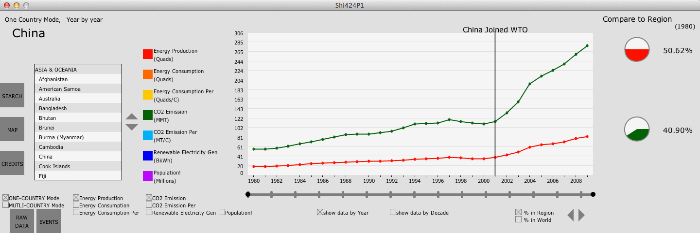
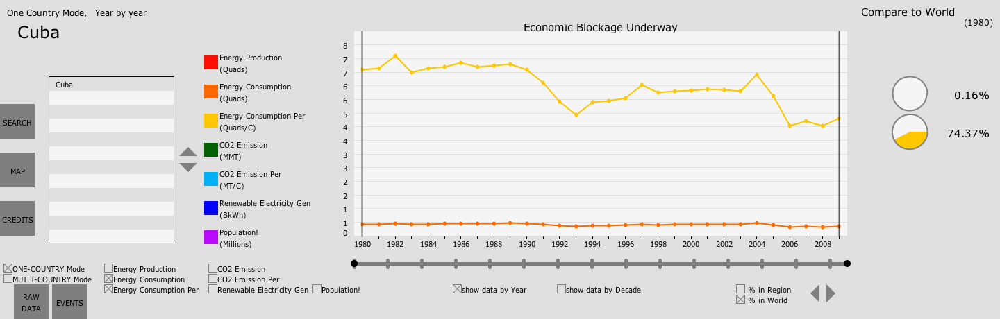
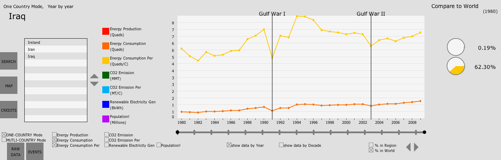
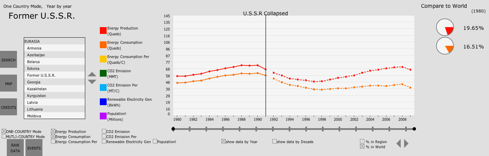
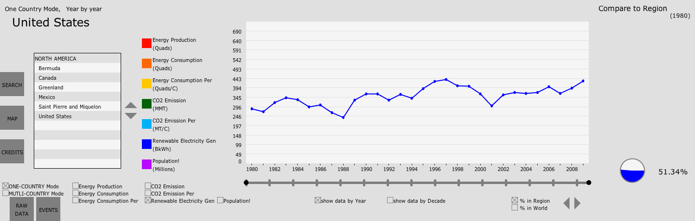

International Events may affected Energy production
2001 China joined World Trading Organization
I found that China's Energy production started to increase rapidly.
There might be many reasons for this phenomena, but I think the most sigficant one would be that China joined WTO in 2001.

Fig.12 China joined WTO
All time U.S.A. blocks economy of Cuba
One of the most interesting curve I found using this app is that Cuba's Energy consumption never grows up.
I think this might be the result of long-time economic blockage upon Cuba from America, although I, of course, can't prove it.

Fig.13 U.S. blocks economy of Cuba
1991 U.S.A. attacked Iraq
Middle East is always under war. So I took a look at their Energy information. What I found is that war probably affected them, especially for Iraq.
Gulf War I makes production (and also consumption) of Energy dropped significantly (relatively) in Iraq.
2003 U.S.A. attacked Iraq again
Same thing happened again in 2003. During Gulf War II, Iraq's Energy production was damaged again.

Fig.14 Gulf War I and Gulf War II
1991 Former U.S.S.R. collapsed
The most significant historic event related to Energy information is the collapse of the Union of Soviet Socialist Republics. The curve itself is not very attractive, (but of course it shows clearly that the situation of production and consumption of Energy (as well as carbon dioxide emissions) are getting worse after 1991 for many years.
The other factor that contributes to the significance of this event is it evolved whole East Europe.

Fig.15 Former U.S.S.R. collased
Interesting phenomena without clue
U.S. Newable Electricity Generation
I have totally no idea why Renewable Electricity Generation of America looks like this. It's interesting but unknown.

Fig.16 United States Renewable Electricity Generation curve